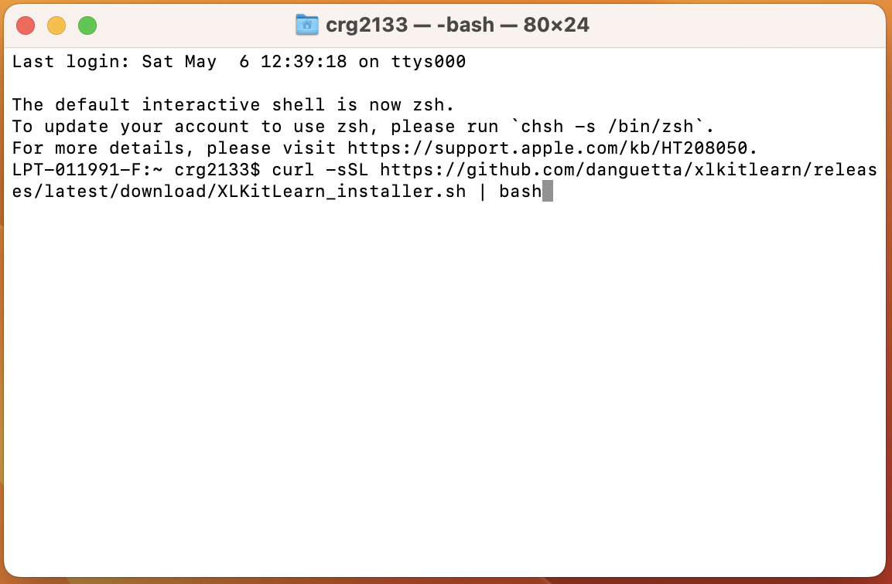

Welcome to XLKitLearn!
Latest Version: 11.01
XLKitLearn was designed to teach machine learning to non-technical students without the distraction of code - it exposes the power of scikit-learn through Excel. This page contains installation instructions - for more background, demos, and pedagogical notes, click on "more info" below.
 |
|||
|---|---|---|---|
| More info |
Windows Installation |
Mac Installation |
Documentation |
Windows Installation
- Download the XLKitLearn installer. [Note: if you have a very old computer and you encounter issues, check out this page].
- Run the downloaded file. Windows will kick up a security warning. Click on "More info" and then "Run anyway".
- You computer may pause for 10-20 seconds. You will then be shown another Windows security warning. Click on "Yes"

- The installer will then launch. Click on "Install", and let the installer do its thing.
- Once the progress bar has completed, a black window will pop up that looks something like this - let it do its thing (note: XLKitLearn will not interfere with any version of Python already installed on your computer)
- Click on "Finish" to exit the installer.
- Open Excel.
- Go to the start menu, scroll down your list of programs, and find the "XLKitLearn" folder. Select the "XLKitLearn" item therein.
- In the resulting window, click on "Enable Content"
- You will immediately be prompted to save the file as follows:
Click "OK" and immediately press Ctrl+Ssave the file somewhere - XLKitLearn cannot be used before the file is saved. - If you are using XLKitLearn for the first time, check whether the installation worked by entering your email address into the Excel and clicking on the first "Run" button
- If the add-in runs successfully, the following screen should show up (note that the contents of cell D13 have been obscured. If you are installing this add-in as part of a class, your instructor might ask you to report the value in that cell to verify you've installed the add-in correctly)
Mac Installation
- Bring up Spotlight Search by pressing
Command + Space, and type "terminal" in the search bar. Click on the terminal icon: - Copy and paste the following line exactly into the terminal
and then presscurl -sSL https://github.com/danguetta/xlkitlearn/releases/latest/download/XLKitLearn_installer.sh | bashEnter: - The command should take between 3 and 6 minutes to run, and end with the text
Successfully installed XLKitLearn!in green:If your run ends with an error message in red instead, please red it carefully and follow the instructions contained therein. If you have any issues, reach out to whoever gave you the add-in.
- Open Excel.
- Go to your desktop and find the
XLKitLearn.xltmfile. Open it. (You will need to open this file every time you want to launch a blank version of XLKitLearn). - You will be asked to enable Macros - click "Enable Macros":
- You will immediately be prompted to save the file as follows:

Command+Ssave the file somewhere - XLKitLearn cannot be used before the file is saved. - If you are using XLKitLearn for the first time, check whether the installation worked by entering your email address into the Excel and clicking on the first "Run" button
- If the add-in runs successfully, the following screen should show up (note that the contents of cell D13 have been obscured. If you are installing this add-in as part of a class, your instructor might ask you to report the value in that cell to verify you've installed the add-in correctly)
- Finally, click on the first "Edit Settings" button on the spreadsheet:
And click "Select" and then "Grant Access" (Because of Excel+Mac's truly Kafkaesque - and ineffectual - approach to file security, you might have to do this a few times).